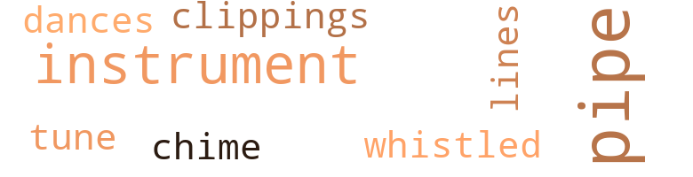
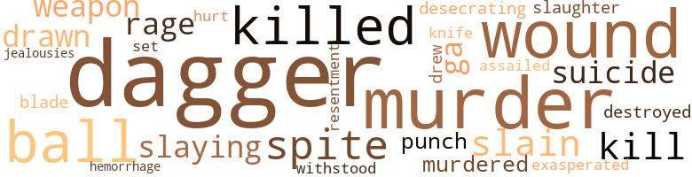
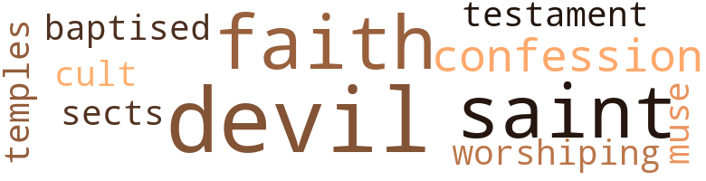

Counterfeit Corpse (The), by Vanderpuije, Nii Akrampahene (1956)
14 music-related terms matched in this text.
Most frequent terms in this topic: pipe (5); instruments (2); tune (1); clippings (1); whistled (1)
chime.n.01
Definition: a percussion instrument consisting of a set of tuned bells that are struck with a hammer; used as an orchestral instrument
| word | sentence |
|---|---|
| chime | " The Westminster chime clock in the entrance hall was striking three at the time . " |
clipping.n.01
Definition: an excerpt cut from a newspaper or magazine
| word | sentence |
|---|---|
| clippings | It would be best to go through all these clippings which , I presume , summarize the life and works of that scientist . |
dance.n.01
Definition: an artistic form of nonverbal communication
| word | sentence |
|---|---|
| dances | Memories of Law School , the names of certain professors whose courses he and Morcourt had taken , cer - tain school scandals , even some rowdy school dances or the idiosyncrasies of their former teachers . |
musical_instrument.n.01
Definition: any of various devices or contrivances that can be used to produce musical tones or sounds
| word | sentence |
|---|---|
| instruments | Those present were , besides the District Attorney and the Examining Magistrate , the latter 's clerk , the officials of the Criminal Records Office with their instruments , the Prefect of Police and Gilbert , the butler . |
| instruments | And , I , alone , assume the maintenance and cleaning of the laboratory and the instruments . |
| instrument | The desk was a mag - nificent mahogany Empire piece ; besides the desk pad and inkwell , there were a few books on it , a microscope under a glass cover , a Physics instrument which was unfamiliar to the Prefect and , on an ebony base , a splendidly pol - ished , spherical rock crystal globe . |
pipe.n.04
Definition: a tubular wind instrument
| word | sentence |
|---|---|
| pipe | He stays here until three o'clock , smoking his pipe . |
| pipe | At about eleven-thirty , he was ready , at long last ( to use a stock phrase ) , and putting his pipe and tobacco pouch into his pocket , Daniel Petit left immediately for the Avenue Carnot , still taking his time . |
| pipe | " And now , I 'm going to fill my pipe , too . |
| pipe | He filled his pipe , lit it and continued keeping watch . |
| pipe | And Monsieur Jean Mesurier , now alone with Inspec - tor Daniel Petit , sitting opposite him puffing on his pipe in silence , began to brief the latter on the crime . |
tune.n.01
Definition: a succession of notes forming a distinctive sequence
| word | sentence |
|---|---|
| lines | The rods permitted the orientation of their lines in the direction of angles which could be determined by a needle moving on a graduated dial . |
| tune | You know the misfor - tune that befell me , twenty years ago . . . and all that hap - pened because it had not been possible to get a diagnosis early enough to . . . save Claude , perhaps . |
whistle.v.01
Definition: make whistling sounds
| word | sentence |
|---|---|
| whistled | " Professor Stephane Leclercl " Jacques Benin whistled in surprise . |
78 violence-related terms matched in this text.
Most frequent terms in this topic: dagger (14); murder (8); wound (6); ball (5); spite (4)
attack.v.01
Definition: launch an attack or assault on; begin hostilities or start warfare with
| word | sentence |
|---|---|
| assailed | Immediately a strong odor of gas assailed them . |
bleeding.n.01
Definition: the flow of blood from a ruptured blood vessel
| word | sentence |
|---|---|
| hemorrhage | Moreover , they could find no internal hemorrhage in the mediastinum related to the wound . |
dagger.n.01
Definition: a short knife with a pointed blade used for piercing or stabbing
| word | sentence |
|---|---|
| dagger | The hilt of a dagger protruded from the region surrounding the dead man 's heart and it had been driven in up to its guard and through the vic - tim 's overcoat . |
| dagger | The analytical studies and all the laboratory tests had not led to the detection of any poison either in the blood , the brain or even on the dagger blade . |
| dagger | He died , or , at least , the circulation of the blood was com - pletely cut off before digestion ceased , and , on the basis of a thorough examination , the experts are of the opinion that when the dagger was thrust into the victim , he was al - ready lifeless . |
| dagger | However , once the possibility of death from a known poison is elim - inated , the dagger in the heart is simply a stage trick intended to lead astray all investigations ! " |
| dagger | " Unless , " murmured the Inspector , " the dagger is sym - bolical . . . vengeance wreaked on an enemy who is already dead and whom one might have wanted to kill , one - self . . . . " " Yes , my dear Petit , that 's still another theory , but that will involve us with secret societies , with sects blinded by passion . . . . |
| dagger | For if the dagger is n't poisoned it did not cause death . " |
| dagger | The dagger , with its haft of carved horn , seemed to be deeply planted in the body . |
| dagger | Taking great care not to touch the dagger , Lagroue un - buttoned the dead man 's overcoat . |
| dagger | The search for fingerprints on the hilt of the dagger had been a waste of time . |
| dagger | The hilt of the dagger protruded from his overcoat through which he had been stabbed . |
| dagger | After the dagger had been carefully withdrawn , the wound was probed . |
| dagger | " Either the dagger was poisoned and impregnated with a liquid or a substance which immed - iately coagulates the blood or , at least , stops its circulation - and I do n't know just what substance it could be , or else - " " Or else ? " asked Monsieur Mesurier . |
| dagger | " In any case , the blade of the dagger is going to be exam - ined in the laboratory and tested for poison ; if any poison is found , we 'll try to determine what kind it is . |
| dagger | A dagger through his heart . |
defy.v.01
Definition: resist or confront with resistance
| word | sentence |
|---|---|
| withstood | His fever is diminishing , his general condition is improving and his lungs have withstood the blow . |
desecrate.v.01
Definition: violate the sacred character of a place or language
| word | sentence |
|---|---|
| desecrating | " He can be accused of stabbing ... of desecrating a corpse ! " |
destroy.v.04
Definition: put (an animal) to death
| word | sentence |
|---|---|
| destroyed | And now that you 've answered the Prefect of Po - lice with such accuracy you 've destroyed our last hope of throwing some light on this case ! " |
draw.v.23
Definition: pull (a person) apart with four horses tied to his extremities, so as to execute him
| word | sentence |
|---|---|
| drew | The train was announced and then it pulled into the station and drew up to the platform . |
| drawn | Your death certificate was drawn up after the autopsy which was performed yesterday . " |
| drawn | The nurse handed Sebastien a list she had just drawn up of supplies that were needed . |
fury.n.01
Definition: a feeling of intense anger
| word | sentence |
|---|---|
| rage | To the left of the gate , a ga - rage , the back of which touched the house , formed an iron curtain with its doors which were closed now . |
| rage | And he was feeling so poorly that after he had put his car in the ga - rage , he went straight to bed . |
infuriate.v.01
Definition: make furious
| word | sentence |
|---|---|
| exasperated | Not discouraged but exasperated by a succession of setbacks and all those contradictions ! " |
jealousy.n.01
Definition: a feeling of jealous envy (especially of a rival)
| word | sentence |
|---|---|
| jealousies | Be - cause that sort of thing can bring on homicidal jealousies . |
kill.v.10
Definition: cause the death of, without intention
| word | sentence |
|---|---|
| killed | Her brother , a colonial officer , had been killed in Africa before he could start - at least officially - a family . |
| kill | " Unless , " murmured the Inspector , " the dagger is sym - bolical . . . vengeance wreaked on an enemy who is already dead and whom one might have wanted to kill , one - self . . . . " " Yes , my dear Petit , that 's still another theory , but that will involve us with secret societies , with sects blinded by passion . . . . |
| kills | He takes advan - tage of his almost incredible resemblance to the latter , kills him to take his place and tranquilly enjoy his fortune . " |
| kill | " But was it only because he did n't have the money he owed or , did he kill his cousin to rob him ? |
| killed | Remorseful that you had killed , right ? " |
| killed | Who killed him ? " |
| killed | " You killed him because he did n't want to answer your latest request for money ! " |
knife.n.02
Definition: a weapon with a handle and blade with a sharp point
| word | sentence |
|---|---|
| knife | Without removing either the knife or the clothing , we found this wallet . |
malice.n.01
Definition: feeling a need to see others suffer
| word | sentence |
|---|---|
| spite | " Are you under the impression that , in spite of his very orderly existence , Sebastien may be a deceptive man , given to lying ? " |
| spite | Claude 's tone of voice had been so clear , so decisive that , in spite of all , he was deeply impressed . |
| spite | But he certainly does n't spend all his income , in spite of all the good deeds he does around him . " |
| spite | " In spite of all the proof that has been accumulated , I still can not believe my brother-in-law is dead ! " |
murder.n.01
Definition: unlawful premeditated killing of a human being by a human being
| word | sentence |
|---|---|
| murder | We have hardly anything but circumstantial evidence and his total lack of an alibi at the time of the murder . . . . " " Let 's say , instead , at the time of the stabbing , for we still do n't know the cause of his death , according to the experts ! " |
| slaying | " Sir , I simply want to point out that if Hubert Brixes wreaked his vengeance by slaying a man on the Rue Co - pernic , he was discreet and honest enough I should say , not to have robbed his victim , especially since he was in such need of money . . . " I realize that this is an argument in favor of Brixes for , after all , there were more than fifteen thousand francs in the wallet . . . " In banknotes that may be counterfeit . " |
| slaying | And , besides , the slaying of one man is a venial sin compared to the slaughter that Hitler deliberately provoked . " |
| murder | Not murder . |
| murder | He was thinking of the murder case . |
| murder | After the butler 's departure , the Judge took his time , hesitated , then said : " I apologize for being obliged to question you about a painful situation which you possibly do n't know about but my investigation of the Rue Copernic murder is deadlocked , at present , and I 'm casting about , high and low , for a solution . |
| murder | ... " I simulated a murder and stabbed Jean 's double through the heart . . . . |
| murder | Commissioner Brugue has told me of the horrible murder and I 'll do all I can to avenge your master . |
| murder | For , of course , you 'll have one of your colleagues take over the case you were working on and , as of now , I 'm anxious to have you investigate the Morcourt murder . |
| murder | I shall advise the Public Prosecutor and the Examining Magistrate that I 'm placing the Rue Copernic murder case in your hands . " |
murder.v.01
Definition: kill intentionally and with premeditation
| word | sentence |
|---|---|
| slain | And did Brixes take him to be his cousin and could he have slain the double ? |
| slain | " But then who is the slain man of the Rue Copernic ? |
| murdered | The murdered man , at first , was be - lieved to be your brother-in-law . " |
| murdered | He 's been murdered . |
| slain | . . . But if that 's the case , who is the slain man of Rue Copernic ? " |
musket_ball.n.01
Definition: a solid projectile that is shot by a musket
| word | sentence |
|---|---|
| ball | Unless - At that moment , the Inspector 's eyes were drawn by the opalescent lights which had just begun to shine in the crystal ball . |
| ball | What is that crystal ball on his desk for ? |
| ball | And you , too , felt your eyes blur while you were looking at the ball and its lights ? " |
| ball | And the crystal ball on his desk , at the Avenue Carnot , must be the apparatus in question . |
| ball | You know , the crystal ball on my desk . . . I make y-rays go through it - they are another form of cos - mic rays . . . . |
pain.v.02
Definition: cause emotional anguish or make miserable
| word | sentence |
|---|---|
| hurt | It even hurt my eyes somewhat . . . . " " I do n't know , Inspector , I 've felt the same way , too , sometimes when I looked at it . |
punch.n.01
Definition: (boxing) a blow with the fist
| word | sentence |
|---|---|
| punch | Will it be mulled wine , or hot punch or some viandox ? " |
| punch | Sebastien , who had quickly warmed the bedsheets , brought his master a hot punch . |
resentment.n.01
Definition: a feeling of deep and bitter anger and ill-will
| word | sentence |
|---|---|
| resentment | His deranged mind , perhaps actu - ated by resentment over his arrest , had seen an oppor - tunity for revenge . |
sic.v.01
Definition: urge to attack someone
| word | sentence |
|---|---|
| set | She was absolutely set on keeping me with her . |
slaughter.n.03
Definition: the savage and excessive killing of many people
| word | sentence |
|---|---|
| slaughter | And , besides , the slaying of one man is a venial sin compared to the slaughter that Hitler deliberately provoked . " |
suicide.n.01
Definition: the act of killing yourself
| word | sentence |
|---|---|
| suicide | Only , the same letter , with the same stamp and the same cancellation were found in the inside right - hand overcoat pocket of the dead man on the Rue Coper - nic and it was your failure to answer his request which moved your cousin to attempt suicide by turning on the gas . " |
| suicide | I would have gotten him out of a tight spot , once again , and he would n't have been driven to suicide . |
sword.n.01
Definition: a cutting or thrusting weapon that has a long metal blade and a hilt with a hand guard
| word | sentence |
|---|---|
| blade | The analytical studies and all the laboratory tests had not led to the detection of any poison either in the blood , the brain or even on the dagger blade . |
tabun.n.01
Definition: the first known nerve agent, synthesized by German chemists in 1936; a highly toxic combustible liquid that is soluble in organic solvents and is used as a nerve gas in chemical warfare
| word | sentence |
|---|---|
| ga | To the left of the gate , a ga - rage , the back of which touched the house , formed an iron curtain with its doors which were closed now . |
| ga | And he was feeling so poorly that after he had put his car in the ga - rage , he went straight to bed . |
weapon.n.01
Definition: any instrument or instrumentality used in fighting or hunting
| word | sentence |
|---|---|
| weapon | He hung up , had the policemen turn in the report they had just finished working on , and , then , examined the body at length without removing the embedded weapon . |
| weapon | The murderer must have wrapped the weapon in a handkerchief or , more likely still , he must have been wearing gloves , for the cold weather warranted it . |
wound.n.01
Definition: an injury to living tissue (especially an injury involving a cut or break in the skin)
| word | sentence |
|---|---|
| wound | After the dagger had been carefully withdrawn , the wound was probed . |
| wound | The strange fact which astounded the two doctors im - mediately , was that the wound , which was very distinct and quite wide , nevertheless had not caused blood to over - flow into the tissues as one might legitimately and reason - ably expect . |
| wound | There was merely a trickle of blood , alto - gether out of proportion to the gravity of the wound . |
| wound | However , in such cases , very special symptoms can be observed , such as hemorrhagic effusion into the peri - cardium with the cutaneous wound infiltrated with co - agulated blood ; even the lips of such wounds are retracted . |
| wounds | However , in such cases , very special symptoms can be observed , such as hemorrhagic effusion into the peri - cardium with the cutaneous wound infiltrated with co - agulated blood ; even the lips of such wounds are retracted . |
| wound | In the body of the Count de Morcourt , on the con - trary , the doctors found that the wound was livid , its lips were very slightly retracted , and there were no blood clots . |
| wound | Moreover , they could find no internal hemorrhage in the mediastinum related to the wound . |
16 religion-related terms matched in this text.
Most frequent terms in this topic: devil (3); confession (2); faith (2); sects (1); cult (1)
baptize.v.01
Definition: administer baptism to
| word | sentence |
|---|---|
| baptised | I still remember very dearly when Mon - sieur Jean and Mademoiselle Claude were baptised , for I was present . " |
confession.n.05
Definition: the document that spells out the belief system of a given church (especially the Reformation churches of the 16th century)
| word | sentence |
|---|---|
| confession | He had heard the dying man 's confession and administered extreme unc - tion . |
| confession | I thought that if we brought him before the dead man sud - denly , we 'd soon get a confession if he really is the mur - derer . " |
cult.n.03
Definition: followers of an unorthodox, extremist, or false religion or sect who often live outside of conventional society under the direction of a charismatic leader
| word | sentence |
|---|---|
| cult | Daniel Petit did n't take his car , since it would be diffi - cult to get it started in the cold . |
muse.n.01
Definition: in ancient Greek mythology any of 9 daughters of Zeus and Mnemosyne; protector of an art or science
| word | sentence |
|---|---|
| muse | The muse tell her patient with the priest . |
religion.n.01
Definition: a strong belief in a supernatural power or powers that control human destiny
| word | sentence |
|---|---|
| faith | And I have faith in you , for if you do n't succeed , there is no one who can find the key to the enigma . " |
| faith | You 've seen that he continues to place faith in me , for it 's been twenty years now that the widower has kept on his wife 's servant . . . . " " Actually , just what did Madame Leclerc die of at such a young age ? " |
saint.n.02
Definition: person of exceptional holiness
| word | sentence |
|---|---|
| saints | Only saints do not sin , and even they . |
| saint | She died a saint 's death , Inspec - tor . " |
satan.n.01
Definition: (Judeo-Christian and Islamic religions) chief spirit of evil and adversary of God; tempter of mankind; master of Hell
| word | sentence |
|---|---|
| devil | Poor devil ! |
| devil | " Poor devil ! |
| devil | " What the devil could he possibly use that for , " Petit asked himself . |
sect.n.01
Definition: a subdivision of a larger religious group
| word | sentence |
|---|---|
| sects | " Unless , " murmured the Inspector , " the dagger is sym - bolical . . . vengeance wreaked on an enemy who is already dead and whom one might have wanted to kill , one - self . . . . " " Yes , my dear Petit , that 's still another theory , but that will involve us with secret societies , with sects blinded by passion . . . . |
temple.n.03
Definition: an edifice devoted to special or exalted purposes
| word | sentence |
|---|---|
| temples | There lay before him a very distinguished looking man , fifty years old or so , very expensively dressed and somewhat grey at the temples . |
testament.n.01
Definition: a profession of belief
| word | sentence |
|---|---|
| testament | He recovered his breath then , turning to his attorney , he said : " In my desk , over there , you will find my testament . |
worship.v.02
Definition: show devotion to (a deity)
| word | sentence |
|---|---|
| worshiping | " And has Sebastien told you how Professor Leclerc , after so many years , persists in worshiping his wife ? " |